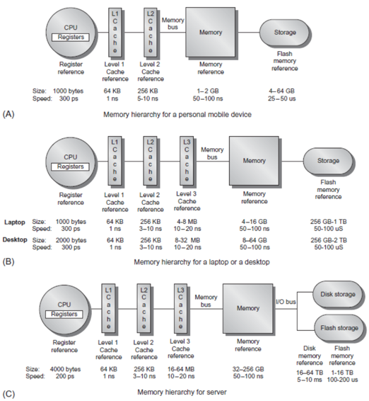

date: 2020-04-28 updated: 2020-09-06
如何在Linux系统中查询cache信息

内存分层模型
Computer Architecture A Quantitative Approach (6th Edition)
使用getconf命令来查询cache信息 getconf命令可以查询计算机硬件的很多信息，这其中就包括了cache，因此我们可以使用如下的命令来获取cache相关信息：
1 $ getconf -a | grep CACHE
在我的电脑里获取到了如下信息：CPU: AMD Ryzen 7 2700
1 2 3 4 5 6 7 8 9 10 11 12 13 14 15 LEVEL1_ICACHE_SIZE 65536
这些数据的单位均为字节（Byte）。
一级缓存分“指令缓存”和“数据缓存”两种，分别用ICACHE和DCACHE来表示。
SIZE指的是该级缓存的总大小。LINESIZE指的是该级缓存cache行的大小。即在内存层次模型（Memory Hierarchy）中，该级cache向低一级cache访问时，一次性抓取的数据量。ASSOC指的是该级缓存组相联的组数。
通过系统自带的库来获取cache信息 头文件unistd.h封装了大量针对系统调用的API，可以藉此获取相应的信息：
1 2 3 4 5 6 7 8 9 10 11 12 13 14 15 #include <stdio.h> #include <unistd.h> int main (void ) long l1_cache_line_size = sysconf(_SC_LEVEL1_DCACHE_LINESIZE);long l2_cache_line_size = sysconf(_SC_LEVEL2_CACHE_LINESIZE); long l3_cache_line_size = sysconf(_SC_LEVEL3_CACHE_LINESIZE);printf ("L1 Cache Line Size is %ld bytes.\n" , l1_cache_line_size); printf ("L2 Cache Line Size is %ld bytes.\n" , l2_cache_line_size); printf ("L3 Cache Line Size is %ld bytes.\n" , l3_cache_line_size); return (0 );
gcc编译后运行可得如下信息：
1 2 3 4 5 6 $ vim cache-info.c
通过不同系统相应的文件来获取cache信息 参考[https://stackoverflow.com/questions/794632/programmatically-get-the-cache-line-size]
1 2 3 4 5 6 7 8 9 10 11 12 13 14 15 16 17 18 19 20 21 22 23 24 25 26 27 28 29 30 31 32 33 34 35 36 37 38 39 40 41 42 43 44 45 46 47 48 49 50 51 52 53 54 55 56 57 58 59 #ifndef GET_CACHE_LINE_SIZE_H_INCLUDED #define GET_CACHE_LINE_SIZE_H_INCLUDED #include <stddef.h> size_t cache_line_size () #if defined(__APPLE__) #include <sys/sysctl.h> size_t cache_line_size () size_t line_size = 0 ;size_t sizeof_line_size = sizeof (line_size);"hw.cachelinesize" , &line_size, &sizeof_line_size, 0 , 0 );return line_size;#elif defined(_WIN32) #include <stdlib.h> #include <windows.h> size_t cache_line_size () size_t line_size = 0 ;0 ;0 ;0 ;0 , &buffer_size);malloc (buffer_size);0 ], &buffer_size);for (i = 0 ; i != buffer_size / sizeof (SYSTEM_LOGICAL_PROCESSOR_INFORMATION); ++i) {if (buffer[i].Relationship == RelationCache && buffer[i].Cache.Level == 1 ) {break ;free (buffer);return line_size;#elif defined(linux) #include <stdio.h> size_t cache_line_size () 0 ;"/sys/devices/system/cpu/cpu0/cache/index0/coherency_line_size" , "r" );unsigned int i = 0 ;if (p) {fscanf (p, "%d" , &i);return i;#else #error Unrecognized platform #endif #endif